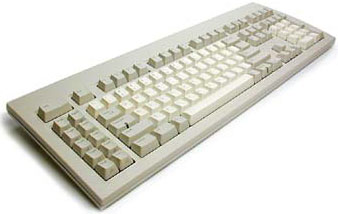
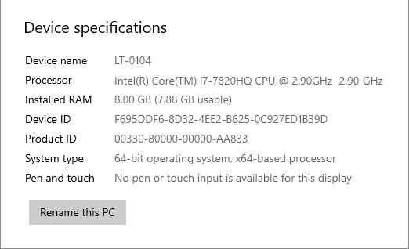
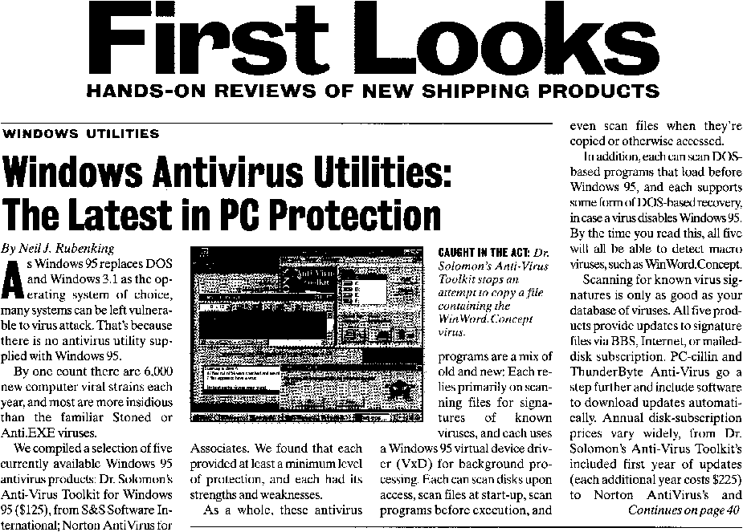
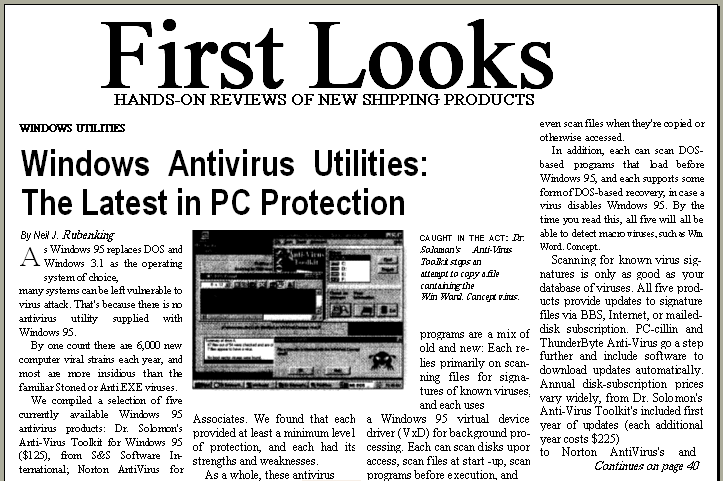
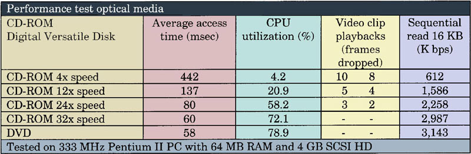
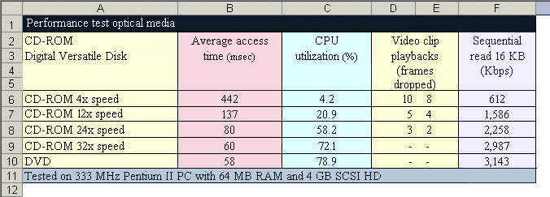

Tweet
Tweet
What does OCR mean? “OCR” is the abbreviation of “Optical Character Recognition”, it describes the process whereby an image is captured of a paper document — we speak of “scanning” — after which the text is “extracted” from that image.
Hence, paper documents are converted into editable computer files. And that’s precisely what text recognition is all about: entering texts into your computer without retyping them. After all, as efficient as computers are, you have to key in your information first!
Document recognition is easily 40 times faster than manual retyping. To quote just one hard figure: a (very) fast secretary types some 200 characters per minute, the fastest OCR software recognizes some 1,600 characters per second on a half-decent PC, say, a 1 GHz Pentium computer.

Of course, a PC dealer would quickly point out that all desktop PCs sold today are… 3 GHz machines, which triples the recognition speed once more. Even laptops have a clock speed of up to 3 GHz these days. And as standard processors contain four cores, state-of-the-art OCR software distributes its CPU heavy tasks among separate threads handled simultaneously by specific cores. (Add sufficient time for the scanning process and the handling of the software!)

And to top if off, you should interpret the word “document” in the broadest sense of the word. The layout of your source document can be recreated so that you don’t have to format your text again!


When you have tables of figures to recapture, you can use OCR too. Reading tables is as good an application as capturing texts! Furthermore, you could easily take the point of view that reading tables makes even more sense than recognizing a text: retyping tables is about the most cumbersome typing job you can do. And when boredom kicks in, typos are right around the corner…


The applications must be clear by now: capturing documents without retyping them, giving your paper documents a new lease on life. If you have ever retyped a 15-page report or a large table of figures, you know how tedious and time-consuming it can be!
The need for recapturing data is actually much bigger than you’d think at first: an American study by the research organization IDC indicated that 55% of all typing done on PCs is actually retyping of data already available on paper. Other studies indicate that 90% of all information is still held on paper, a shocking fact for our computer age!
Concluding, OCR may be the most effective tool to have in your office, so there is no reason why you shouldn’t unburden yourself with the fastidious task of retyping text and data!